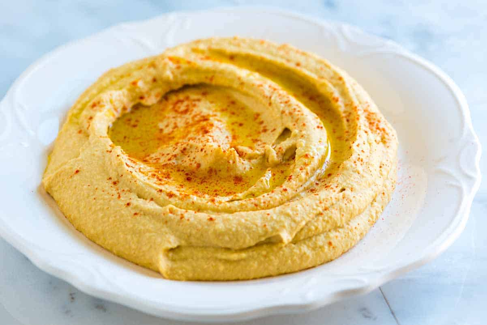

Hummus

What is hummus?
Hummus is a delicious paste or dip made of chick peas. It is mostly used in arabic countries as a side dish to the main course, in stead of potatoes or as a dip for vegetables or bread.
Ingredients
- 480 g chick peas
- Juice of half a lemon
- 4 cloves garlic
- 1 tbsp tahini
- 0,5 tsp ground cumin
- 1,25 dl oil
Instructions
- Mash chick peas, lemon juice, salt, tahini, ground cumin and oil in a procesesor.
- Serve and enjoy!